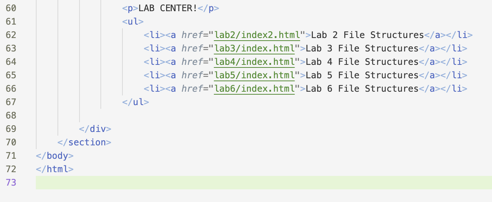

Lab 3 - File Structure and File Trasnfer
Challenge
To further create a local file structure on your computer, add index.html files, and upload our work to be available online through github!
Problems
Some issues came up, but nothing with the coding. Mostly, it was understanding which screenshots to submit, as it wasn't totally clear. But, we figured it out!
Reflection
I think this assignment wasn't too bad, the coding aspect was pretty straight forward and easy to undersand. It definitely helped to work with a partner, so answer any immediate questions that came up during the process of finishing the lab.
Results
We were able to add selfies of ourselves to our personal websites, make an ordered list linking all labs for the course, and finish up this Lab summary!
